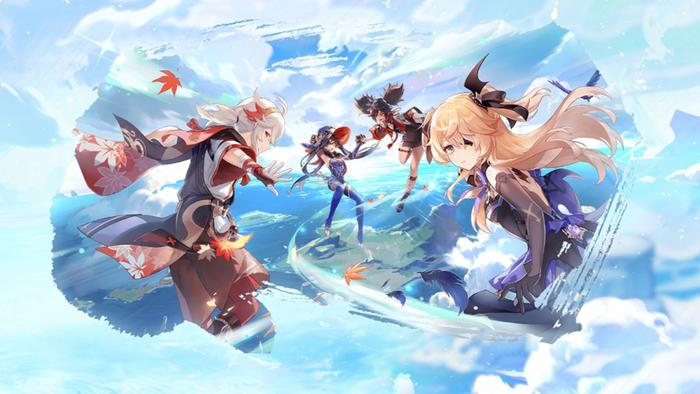
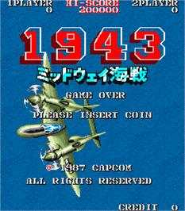
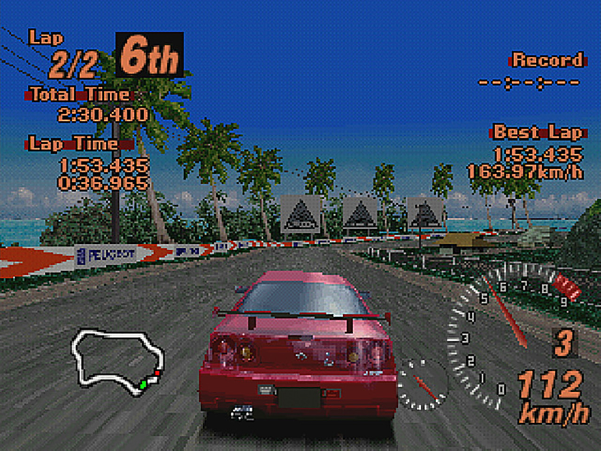
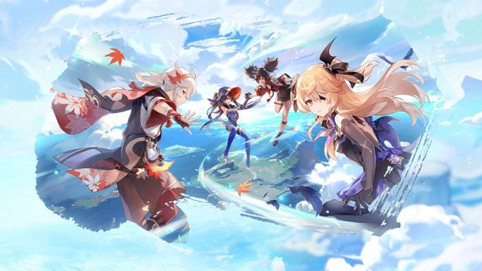
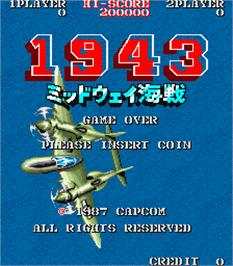
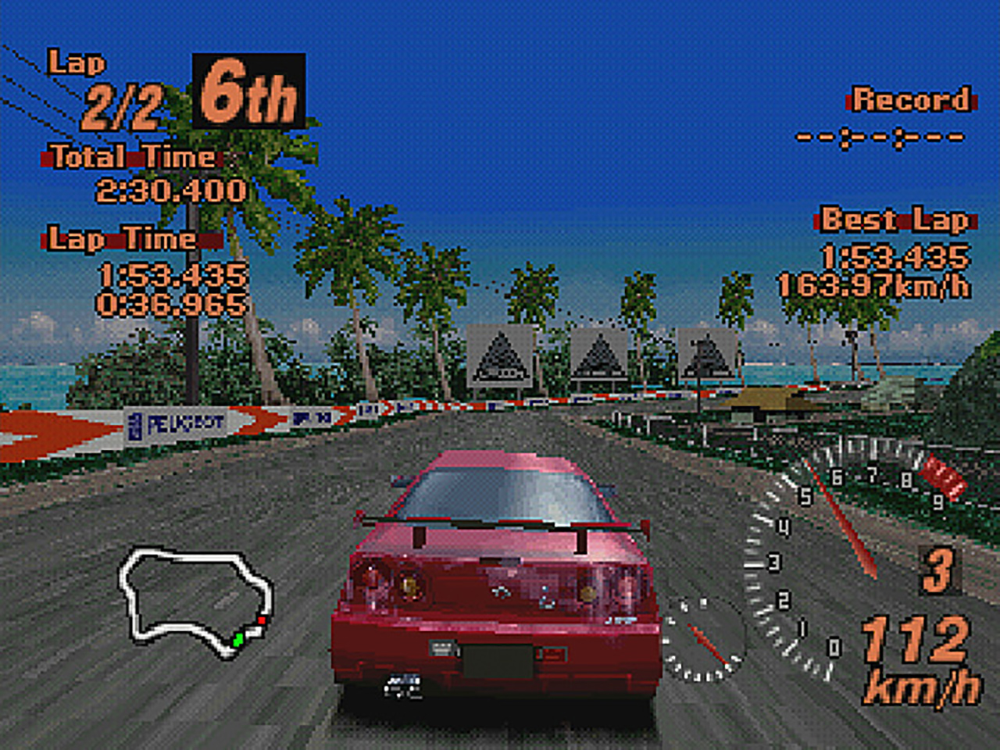

Spel
Jag gillar att spela ändå om jag inte gör det jätteofta, men när jag väl spelar så tycker jag att det är roligt och jag spelar någon timme. Jag spelar mest mobil spel och på nintendo switch, kan ibland gå lite retro och spela på n64,nes och gb.
Mario kart 8
Genshin Impact
1943:midway kaisen
Gran turismo 2
 




